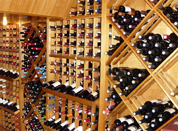
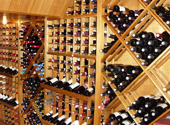

Armazenagem Controlada
Uma das particularidades relevantes dos vinhos é o risco de sua degradação, ou ao menos alteração de suas características de coloração, aromas e sabor, caso sejam mal armazenados, expostos por muito tempo à luz natural, temperaturas altas, ou mesmo quando expostos a vibrações ou movimentações constantes.
Conhecedora desses riscos, a Vinheria Agnello adota cuidados especiais na armazenagem de seus vinhos, em especial com os vinhos de maior valor e vinhos raros, buscando assim garantir a seus clientes mais exigentes a qualidade original de cada garrafa, como recebida de seus fornecedores ou mesmo das vinícolas de origem.
 

Vantagens de realizar uma armazenagem correta para os vinhos
- Preservação da qualidade
- Evolução controlada
- Evita oxidação
- Proteção contra luz e calor
- Experiência sensorial aprimorada
Dicas para uma boa armazenagem
Mesmo fora de adegas profissionais, cuidar da forma como o vinho é guardado em casa faz toda a diferença. Um armazenamento inadequado pode estragar o vinho, mesmo que ele seja de ótima qualidade.
- Temperatura constante
- Ambiente escuro
- Umidade controlada
- Boa ventilação
- Garrafa deitada